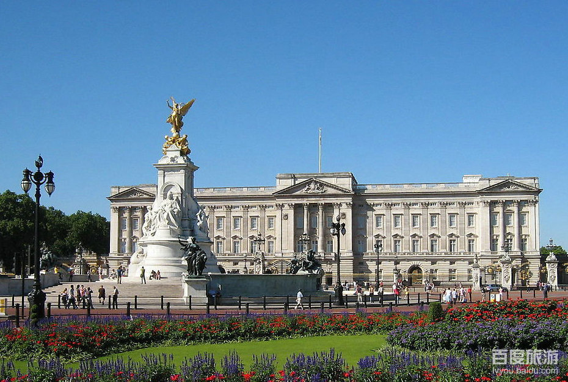

大本钟
关于伦敦

大家印象
伦敦，世人瞩目的、一个现代而又古老的都市，它的风姿和纽约相比多了些皇室的奢华气息，和巴黎相比少了些浪漫的情调。这里有昔日的“日不落帝国” 王宫白金汉宫、历代国王的加冕的威斯敏斯特教堂，泰晤河畔每天精准报时的大笨钟、国会大厦、伦敦塔桥和珍藏皇室宝物的伦敦塔，有过倾帝国全盛时期的财力、汇集世界文明遗产的艺术殿堂大英博物馆..
走进伦敦
伦敦是英国的首都，同时也是欧盟区内最大的城市。融入伦敦自身的迷人文化，使其成为旅游揽胜和感受世界各地文化的绝妙佳处。 伦敦的文化变化万千而又丰富多元，绝不乏新景可观、新物可玩。同时，伦敦还保留着其魅力横生的历史风情。 英国的风景名胜大都云集伦敦，238处风景名胜可免费参观，以如此少的花费，游览如此多的景点，世界上唯有伦敦一处。 伦敦是个有深厚历史底蕴同时充满活力的时尚国际大都市。基础设施非常好。相比罗马的古旧，纽约的破旧，伦敦显得非常鲜活，在继承历史的基础上发展完善，进步而现代，所以在伦敦既可以感觉到历史又可以感受到时尚和活力，既可以感受到欧洲味又可以感受到国际范。伦敦是一个非常多元化的大都市，其居民来自世界各地，具有多元的种族、宗教和文化；城市中使用的语言超过300种。
最佳季节：7月-8月是伦敦的观光旅游旺季。日照时间在英格兰的黄金夏季(Golden summer in England)特别长，晚上9点多天还亮着，有效游览时间比冬季要长出数小时。夏季的各项活动也是丰富多彩。当然在这样的旺季一些热门景点免不了要排队。各航空公司的机票价格也根据旅游淡季和旺季略作浮动。总体来说，7-8月间，机票最贵，8-9月其次，4-5月间再次。在冬季一些观光景点会关闭或缩短开放时间。
建议游玩:3~4天
推荐游览路线
Day1:大英博物馆—>伦敦塔
Day2:白金汉宫—>英国国家美术馆—>特拉法尔加广场
Day3:温莎古堡—>威斯敏斯特教堂—>圣保罗大教堂—>伦敦眼
Day2:白金汉宫—>英国国家美术馆—>特拉法尔加广场
不可错过
---------------必玩景点排行榜---------------
Top 1--->白金汉宫
